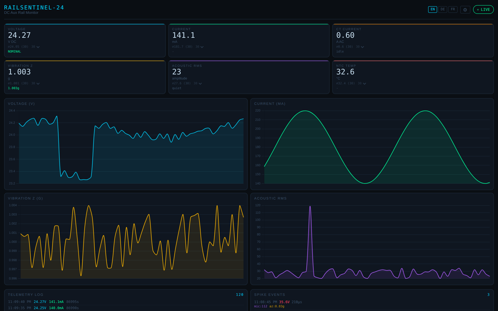

RailSentinel-24 is a small DIN-rail module for DC fast-charger cabinets. It is built to record what the 24 V control supply does, so you can see what the supply did before a charger went down.
Pilot units from Q2 2027, on loan under a test agreement, no lock-in.
Your charger is down. Nobody saw why.
Sometimes it’s the 24 V supply. The charger logs the reset; usually nothing logs the supply.
RS-24 clips on next to it and records what it did.
No change to the charger.
Target · firmware in developmentYour team sees what the 24 V supply did, not just “faulted”.
Target · firmware and app in developmentRule the power in or out, before you drive out.
Pilot units from Q2 2027, on loan under a test agreement, no lock-in.
Dips on the 24 V supply, timestamped and kept on the module.
In your own system (Modbus, MQTT), or on the technician's phone over the site Wi-Fi.
Supply voltage trended per site and fleet. For 12 V and 24 V supplies.
Isolated sensing and communication sides. Monitoring only: it does not switch the charger’s power. Its one output contact is wired in only if you choose to. Not a certified safety component today.
Preliminary

Target · firmware and app in development
See which chargers’ 24 V supply keeps dipping, site by site.
Know what the 24 V supply did before you drive out.
Records of the 24 V supply from field units, to settle “no fault found” returns.
For 12 V and 24 V DC control supplies.
Preliminary
Narrow DIN module. Wi-Fi. Fit and forget.
DIN coupler with expansion slots.
Bare PCB for factory integration.
Limited pilot slots from Q2 2027 · test units on loan under a test agreement · no lock-in.
Fleet size + the chargers that keep failing.
hello@morgen-tech.comRS-24-M · 12 / 24 V · Modbus TCP · MQTT · data pipeline: target, firmware in development.
sales@morgen-tech.comDesign documents for pilot partners under NDA: info@morgen-tech.com